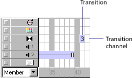

Using Director > Color, Tempo, and Transitions > Using transitions > Creating transitions
Using Director > Color, Tempo, and Transitions > Using transitions > Creating transitions |
Creating transitions
Transitions, like tempos, palettes, sounds, and behaviors, have a channel set aside for them in the Score.

A transition always takes place between the end of the current frame and the beginning of the frame where the transition is set. If you want to create a dissolve between two scenes, set the transition in the first frame of the second scene, not in the last frame of the first scene.
To add a transition:
1 |
In the transition channel, select the frame in which you want the transition to occur. |
2 |
Choose Modify > Frame > Transition or double-click the frame in the transition channel. |
3 |
In the Frame Properties Transition dialog box, choose a category if desired, then select the transition you want. You can quickly scroll through transitions by typing the first letter of the transition's name. |
Many transitions have default settings for Duration and Smoothness. You can adjust the sliders to change the settings. |
|
For many transitions, you can also select whether the transition affects the entire Stage or just the area that's changing. |
|
Xtra transitions may offer additional options provided by the developer. If the Options button is available when you choose an Xtra transition, click it to view and change the transition options. |
|
4 |
Click OK. |
Director displays the cast member number that corresponds to the transition in the transition channel. The transition also appears in the cast. |
|